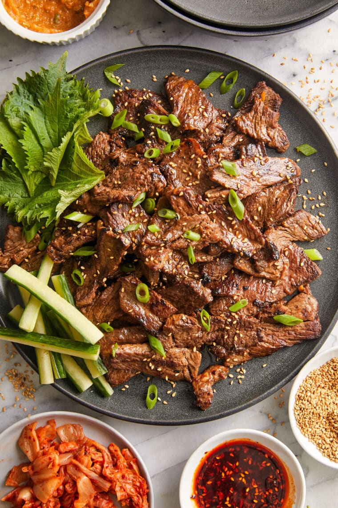

Korean Beef Bulgogi

Description
A super easy recipe for Korean BBQ with
the most flavorful marinade! The thin,
tender slices of meat cook SO quickly!
Bulgogi (불고기) is a Korean dish made of
thinly-sliced meat typically marinated in soy
sauce, sugar, sesame oil, garlic,
ginger and pear.
Bulgogi is most commonly made with beef,
but can also be made with chicken or pork
Ingredients
- 1 1/2 pounds boneless rib eye steak
- 1/2 small pear, peeled and coarsely grated
- 1/4 cup reduced sodium soy sauce
- 2 tablespoons brown sugar
- 2 tablespoons toasted sesame oil
- 3 cloves garlic minced
- 1 tablespoon freshley grated ginger
- 1 tablespoon gochujang, Korean red pepper paste
- 2 tablespoons vegetable oil, divided
- 2 green onions, thinly sliced
- 1 teaspoon toasted sesame seeds
Equipment
Instructions
-
Wrap steak in plastic wrap, and place in the freezer for 30 minutes.
Unwrap and slice across the grain into 1/4-inch think slices.
-
In a medium bowl, combine pear, soy sauce, brown sugar, sesame oil, garlic, ginger
and gochujang. In a gallon size Ziploc bag,
combine soy sauce micture and steak; marinate
for at least 2 hours to overnight, turning the bag occasionally.
-
Heat 1 tablespoon vegetable oil in a cast iron grill pan over medium-high heat. *
Working in batches, add steak to the grill pan
in a single layer and cook, flipping
once, until charred and cooked through, about 2-3 minutes per side. repeat with remaining
1 tablespoon vegetable oil and steak.
-
Serve immediately, garnished with green onions and sesame seeds, if desired.
Home